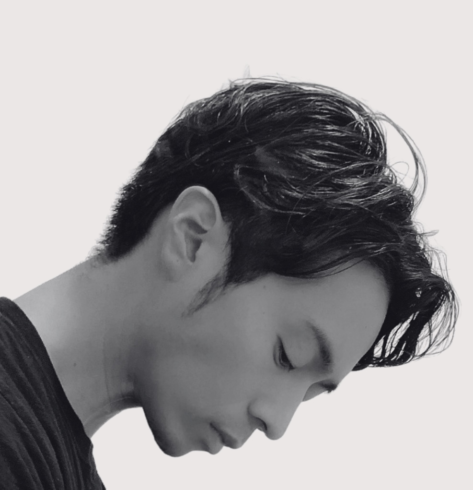
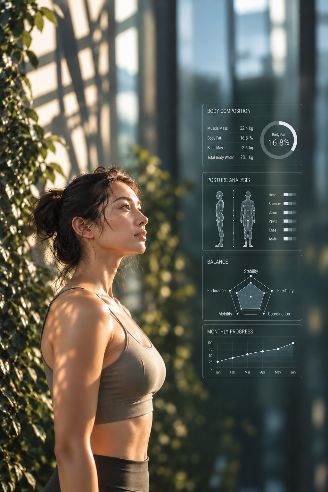
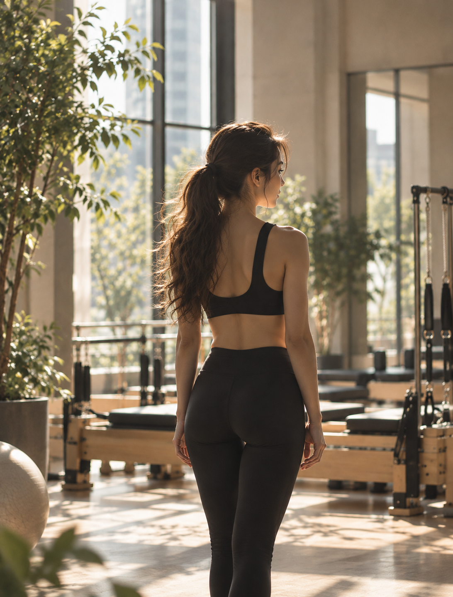

FOUNDER
Koshiro Katsura
Founder CEO
Social Wellness Designer™ | Performance
Specialist | Business CO-Design Partner

REGENERATIVE
My rebirth begins in quiet hush.わたしの再生は、静かに始まる
最先端のウェルネスサイエンスとパフォーマンスサイエンスを基盤に、
身体と精神の成熟をともに育む、
ライフパフォーマンスを高めるためのウェルネスクラブです

知性が、わたしを美しくする
A Wellness Screening powered by AI-driven wellness science
整うほどに、強く、美しく
Beauty Conditioning powered by performance scienceわたしは、わたしへ還っていく
Social Activities curated through Urban Nature Co-living自然と、人と、そして、わたし
すべてがつながり、巡っていく
日常を離れ、自然の中で呼吸し、
人と出会い、心が動く体験を。
ウェルネスは、ひとりで完結するものではなく、
人や自然とのつながりの中で、
より深く、豊かに育まれていきます。
原則ご紹介制
毎月2名様のみ、一般開放
THE LOOPは、ライフスタイルデザインを軸に、身体・自然・人
そして今と未来のつながりを育むソーシャルウェルネスクラブです
2トライアルチケット ¥11,000
REQUEST AN INVITATION →Founder CEO
Social Wellness Designer™ | Performance
Specialist | Business CO-Design Partner
